OFFICIAL MEMBERS
| ANONYMOUS | |
| MIRROR | |
| 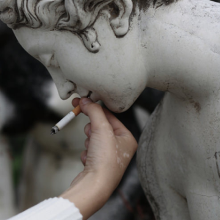 | INICIATING RIOTS |
| 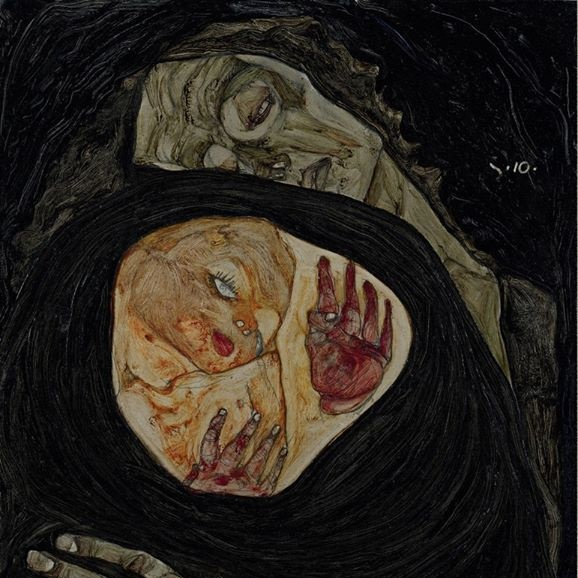 | SUSHI |
| 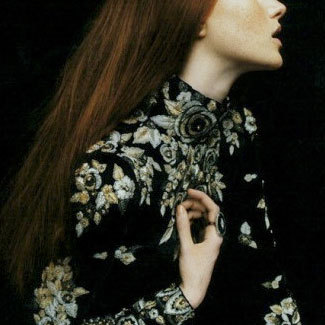 | A.S.P |
| 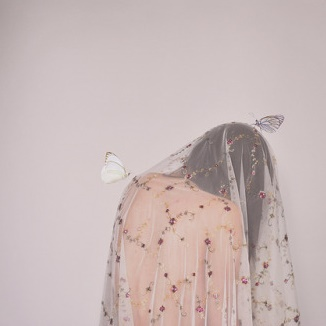 | XVII |
| 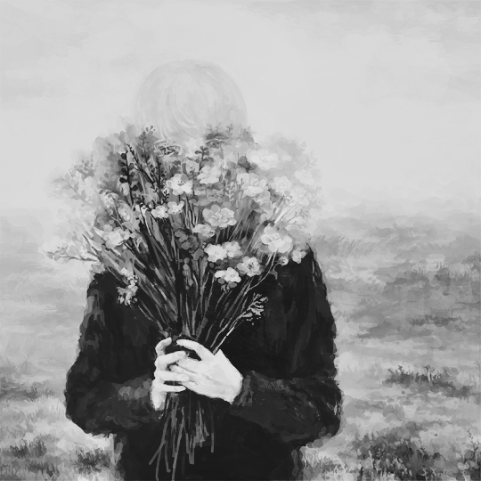 | I.N. |
 |
M.A.R. |
| 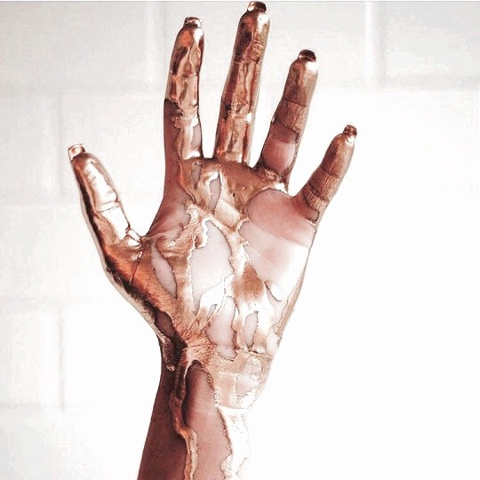 | ICARUS |
| NYX | |
| 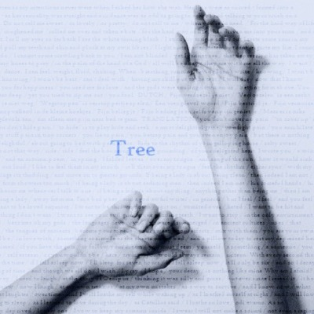 | TREE |
| 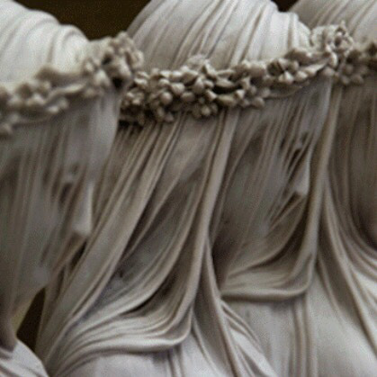 | ELECTRA |
| 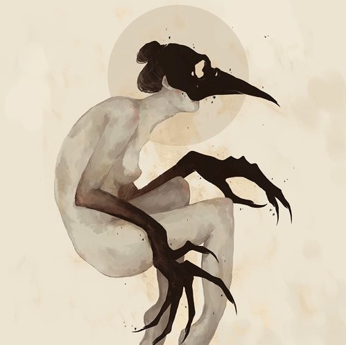 | ROT |
| 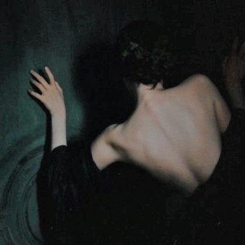 | MORS |
| 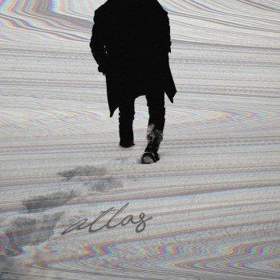 | ATLAS |
| H.S.V. | |
| 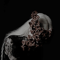 | AA |
| 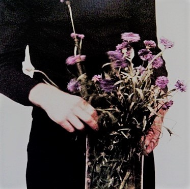 | PETRA |
| XCVIII | |
| 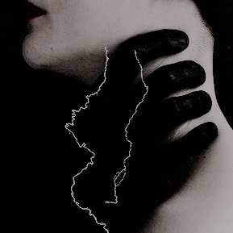 | TEMPESTIA |
| 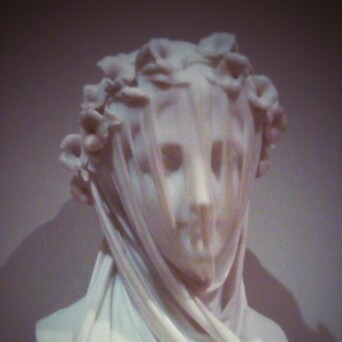 | MJ |
| SATURN | |
| IRIS | |
| MCMXCVIII |
I was never really insane except upon occasions when my heart was touched
... Edgar Allan Poe